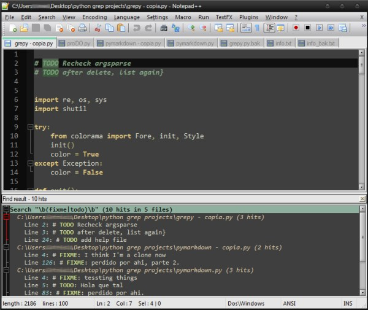
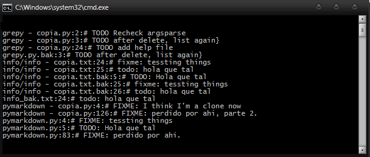
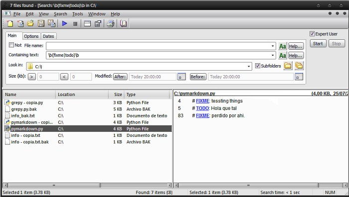
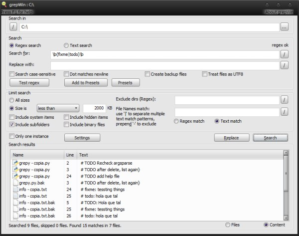
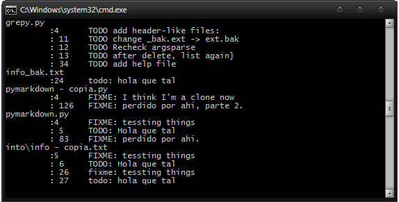
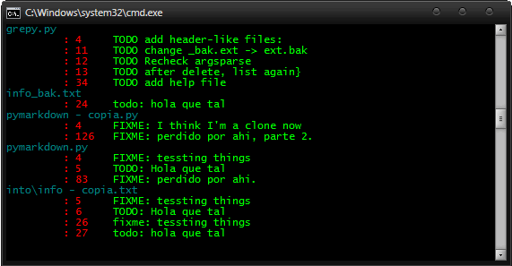

proDO: super simple bug/issue tracker
Atención
Si no te interesa la historia del por qué se escribió el script y/o no queres saber sobre programitas, adelantate hasta acá
Background
Cuando desarrollas o escribis código (o palabras, por qué no) necesitas algún tipo de bug/issue tracker. Eso es normal para proyectos grandes o con varias personas, pero al ser un solo individuo o el proyecto es chico, todas las opciones son como mucho.
A algunos no les importa e instalan grandes bug trackers, otros usan algo mas simple. Otros vamos por la old school y escribimos en papel. Otras escribimos en un .txt, que puede ser un simple archivo o con esos ToDo.txt/taskwarrior1.
Si el proyecto es medianamente grande (más grande que un mero script), escribo en papel. Si es algo simple/un script, anoto las cosas dentro del archivo, como varias personas.
El problema que tengo es que me gusta listar todas las cositas esas con el numero de linea y/o click que me lleve a tal. No todos los editores lo hacen por default (creo que las grandes IDEs), seguro hay un plugin que ni ganas de configurar. Se puede hacer una búsqueda, que es lo mas cercano a lo que quiero.
Uso dos editores de texto dependiendo del trabajo que tengo que hacer: Sublime Text para trabajos "grandes" (por alguna razón) y Notepad++. En ambos se puede hacer búsquedas por proyecto/archivos abiertos, la diferencia es que en Sublime Text te abre una pestañita de miercoles con los resultados (not fun), y Notepad++ te los muestra en una ventanita dockeable (good):

Qué no me gusta de esto? La forma en que te lo muestra2 y el hecho que Notepad++ tiene otro tipo de regex que, según expertos, es mas pobre.
Lo más lógico es usar grep. Si usas Linux, ya viene por defecto, sino con algo como Cygwin en Windows (u otras variantes). Hasta le podes poner colorcitos pero solo a una cosa (el string encontrado). No está mal tampoco pero no es muy limpio3:

Si no te gustan las terminales/lineas de comandos pero queres usar grep, hay varios programitas que te dejan (hacer una especie de) grep4.
Tenes Agent Ransack, donde quedaría asi:

Para este tipo de trabajos no me gusta por que tengo que clickear archivo por archivo (not fun).
Y grepWin, donde hay que tener cuidado de clickear solo en "Search" y seleccionar la opción de "Content"

Este no estaba tan mal, pero eso de abrir programa > rellenar datos no me convencia mucho. Por lineas de comando solo podes poner el path y qué buscar (que no esta mal) pero quiero que, por lo menos, esté seleccionado el "Content".
Say hi to proDO
Como estoy aprendiendo Python y mas que nada lo estoy usando para hacer varios scripts5 y reemplazar/dejar de dar vueltas con los batch, me decidí a hacer el mío.
Con los ejemplos anteriores, queda asi:

Pero si tenes colorama instalado queda asi (con mas onda):

Datos:
- Solo busca las palabras TODO y FIXME (es case insensitive: también podes poner ToDo, todo, tODO, etc)
- Por default, al correr el programa te lista los archivos desde donde corre el script 6, ignorando los
.bak - Se puede especificar la ruta a buscar, corriendo
proDO.py -s/-source [rutita linda] - Se puede eliminar las lineas con:
proDO.py del/d [archivo] [linea](automaticamente hace un backup (.bak) del archivo por si se pone loca) - Si necesitas ejemplos de lo de arriba o queres mirar qué linda hice la ayuda:
proDO.py -h - Si no queres escribir
proDO.py(la extensión es importante en Windows), podes crear un "wrapper batch": en (ejemplo) proDO.bat poner:proDO.py %*. Guardás y listo, ya lo podes llamar comoproDO
Decarga y más información en la página de proDO
-
Que esta lindo, es para linux o con Windows + Cygwin, pero es mucho trabajo para configurarlo para esto. ↩
-
Mentira, me acordé después de hacer el script. Lo testeé y no anda mal. Sólo que no se puede buscar por proyectos, asi que hay que escribir el path en la búsqueda o abrir todos los archivos. ↩
-
Se puede limpiar/formatear con awk, pero tuve problemas con Cygwin que no traía el ejecutable para la herramienta (!) ↩
-
No sé exactamente la diferencia entre grep y buscar dentro de los archivos (con regex), yo lo uso intercambiablemente. ↩
-
por que se me complicó con eso de buscar una IDE para la parte gráfica. ↩
-
en Linux es más fácil (por lo menos en xfce): botón derecho > terminal. En Windows tenes que apretar shift + botón derecho. ↩